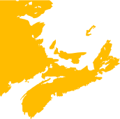

Details about the Fall 2020 Atlantic Category Theory (ATCAT) Seminar can be found below. Information about previous seminars can be found here.

We give a finite presentation by generators and relations for the group $O_n(\mathbb{Z}[1/2])$ of $n$-dimensional orthogonal matrices with entries in $\mathbb{Z}[1/2]$. We then obtain a similar presentation for the group of $n$-dimensional orthogonal matrices of the form $(1/\sqrt{2})^k M$, where $k$ is a nonnegative integer and $M$ is an integer matrix. Both groups arise in the study of quantum circuits. In particular, when the dimension is a power of 2 the elements of the latter group are precisely the matrices that can be represented by a quantum circuit over the universal gate set consisting of the Toffoli gate, the Hadamard gate, and the computational ancilla.